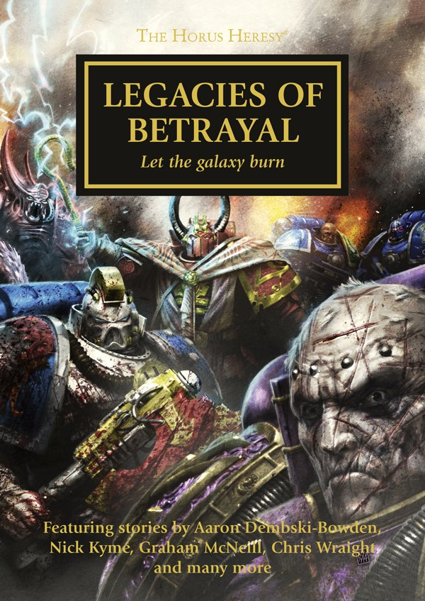

CENSURE

Author: Nick Kyme
Format: Audio Drama
Introduction pending spoiler review. Open the interactive archive to choose whether to reveal the full synopsis.
Listed in: Legacies of Betrayal.
This introduction has not had a spoiler review.
Publication facts: publisher source, checked 2026-09-26.
Open this work in the interactive Archive to track reading progress and explore related works.